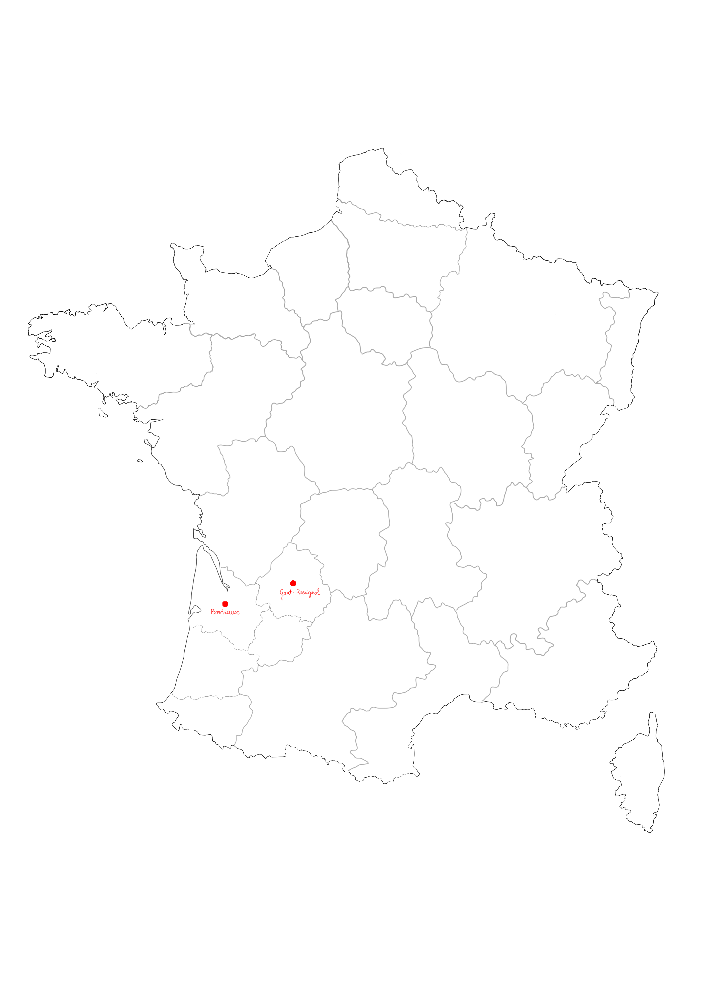

Comin-Campguilhem Architectess regroupe une équipe d’architectes implantés à Bordeaux et à
Goût-Rossignol, forts d’une expérience significative dans les domaines :
de la petite enfance, de l’enfance, la jeunesse,
du scolaire,
du culturel et des tiers lieux,
du logement,
du médical, de l’hospitalier et de l’imagerie médicale
des équipements sportifs.
Notre démarche est une démarche contextualisée : dans le contexte au sens large, du site au
programme, nous recherchons le sens du projet. Nous développons dans nos productions des thèmes
articulant patrimoine et architecture contemporaine; nous positionnons notre intervention en
continuité d’une histoire, d’un patrimoine présent, dont l’intervention contemporaine devient une
sédimentation supplémentaire. Nous développons avec inventivité l’idée de continuité et non de
rupture dans une recherche d’exigence, de qualité architecturale, et de marquage culturel. Nous
considérons qu’un bâtiment s’inscrit dans son paysage et qu’il est aussi le témoignage de notre
culture : notre écriture étire des fils conducteurs présents entre histoire du lieu et paysage
naturel dans une expression contemporaine. L’agence Comin-Campguilhem a engagé un travail de
bâtiments vertueux depuis sa création et développe des bâtiments à énergie positive, avec une
spécialisation de cette approche dans la rénovation. La récuparation des matériaux, l’emploi de
matériaux bruts, faibles en COV, et biosourcés sont particulièrement privilégiés. La démarche
environnementale est au cœur de notre système organisationnel et décisionnel. Notre agence possède
un parc informatique mac-pc très récent et en perpétuelle évolution. Les projets sont dessinés en
3d, afin de communiquer autour de fichiers BIM.

50 rue Fieffé, 33800 Bordeaux
114 route des Prés, 24320 Gout-Rossignol
contact@comincampguilhem.fr
+33 6 28 23 07 69
+33 6 07 58 94 45